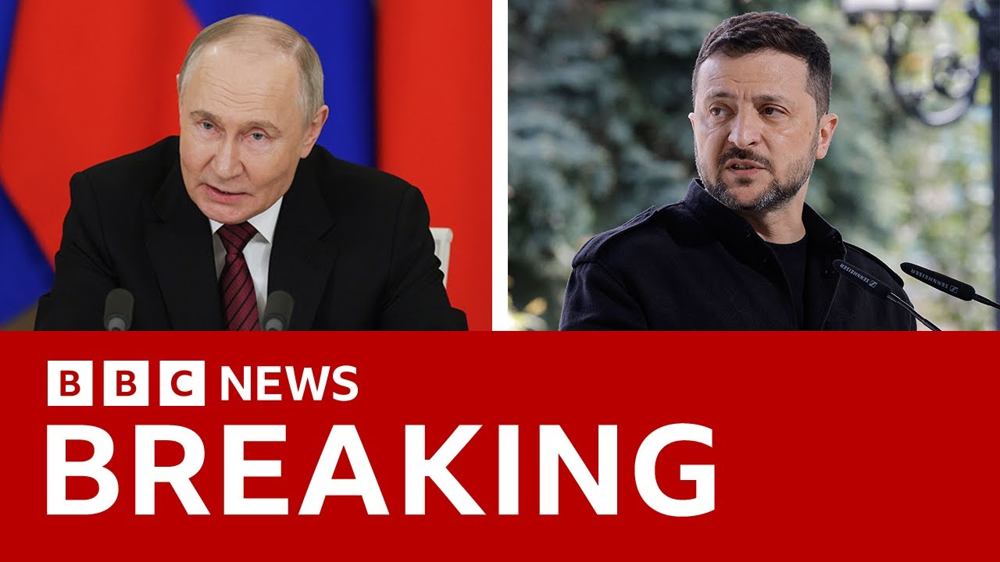

【泽连斯基在特朗普要求乌克兰与俄罗斯直接会谈后提议与普京会面 | BBC新闻】
Summary: Ukrainian President Zelensky agrees to meet Putin in Istanbul after Trump urges immediate talks, expecting a ceasefire to enable diplomacy.
摘要： 乌克兰总统泽连斯基同意在伊斯坦布尔与普京会面，此前特朗普敦促立即谈判，并期待停火为外交斡旋创造条件。

⏱️ Estimated Reading Time: 14 min
In the last hour, Ukrainian President Vladimir Zilinski has said he's prepared to meet Russia's Vladimir Putin for talks in Estanbul on Thursday after President Trump appeared to hit out at Ukraine and urged Mr. Zalinski to agree to talks with Russia immediately.
过去一小时内，乌克兰总统弗拉基米尔·泽连斯基表示，他准备于周四在伊斯坦布尔与俄罗斯的弗拉基米尔·普京会谈，此前特朗普总统似乎抨击乌克兰并敦促泽连斯基立即同意与俄罗斯谈判。
In a post on X, the Ukrainian president also said that he expected a full ceasefire to start on Monday in order to provide the necessary basis for diplomacy to end the war.
乌克兰总统在X上发帖称，他预计周一将全面停火，为结束战争的外交努力提供必要基础。
and I will be waiting for Putin in Turkey on Thursday.
我将于周四在土耳其等待普京。
Personally, he added earlier in a post on his truth social platform.
他早些时候在其Truth Social平台上补充道。
President Trump said President Putin of Russia doesn't want to have a ceasefire agreement with Ukraine, but rather wants to meet on Thursday in Turkey to negotiate a possible end to the bloodbath.
特朗普总统表示，俄罗斯总统普京不想与乌克兰达成停火协议，而是希望周四在土耳其会面，谈判可能的流血冲突终结方案。
Ukraine should agree to this immediately.
乌克兰应立即同意此事。
He went on to say at least they will be able to determine whether or not a deal is possible.
他接着说，至少他们将能判断协议是否可能达成。
Vladimir Putin offered direct talks in Istanbul in a TV address in the early hours of Saturday morning.
弗拉基米尔·普京在周六凌晨的电视讲话中提议在伊斯坦布尔举行直接会谈。
We'll be live in Washington shortly, but first with me is our world affairs correspondent Joe Inwood.
稍后我们将连线华盛顿，但首先由我身旁的国际事务记者乔·因伍德带来报道。
Do we think Thursday will actually happen in some form?
我们认为周四会以某种形式实现吗？
Oh, that is a very very good question.
哦，这是个非常非常好的问题。
We know from the Russians that they've offered these talks.
我们从俄方得知他们已提议这些会谈。
They say that someone will be there.
他们表示会有人出席。
President Trump then says as you were just mentioning the talk should happen and within really within minutes we were speaking an hour ago and between now and then President Zalinski has come out on social media and said I'll be there personally and this is the really interesting thing here President Putin never said he was going to be taking part in these talks and previously talks have happened at a lower level.
特朗普总统随后表示，正如你刚才提到的，会谈应该举行——实际上就在我们一小时前交谈后的几分钟内，泽连斯基总统已在社交媒体上表态将亲自出席，而真正有趣的是普京总统从未说过他会参加这些会谈，此前会谈均以较低级别进行。
I think it was Sergey Lavrov that took part in the last ones which were in Istanbul in 2022 so more than 3 years ago.
我记得上次2022年伊斯坦布尔会谈是谢尔盖·拉夫罗夫参加的，距今已三年多。
President Zilinski has said I'll be there personally.
泽连斯基总统表示“我将亲自到场”。
I'll see you there.
我会在那里见到你。
Putin, which obviously that wasn't part of the agreement.
普京——这显然不在协议范围内。
He then says, "I hope the Russians don't look for excuses."
他随后说：“我希望俄罗斯人不要找借口。”
So, we've got this kind of this not game, but this kind of battle between the two men of what they're offering to do to try and paint themselves, it seems, in the eyes of Donald Trump because that really is one of the key things in this as the person who is happy to look for peace.
因此，这看似不是博弈，但两人确实在通过各自提议的行动展开较量，似乎意在向特朗普展示形象——因为这位乐于寻求和平的人物确实是关键因素之一。
If we saw Zilinski opposite Putin across the table, it would be a big moment, wouldn't it?
如果我们看到泽连斯基与普京隔桌相对，那将是重大时刻，对吧？
Would be extraordinary.
将是非同寻常的。
What would they talk about?
他们会谈些什么？
because, you know, all the indications are they're still so far apart.
因为所有迹象表明他们立场仍相距甚远。
Yeah.
是的。
I mean, I if if that were to happen, and I really I I would not expect I I I won't be waiting to see the two men across each other from a table on Thursday.
我的意思是，如果这真能实现——但我确实不抱期待，我不会等着看周四两人对坐谈判的场景。
If it does, fair enough.
若真发生，那很好。
But I I will be astonished if it does.
但若成真，我会非常震惊。
In terms of the talks, as you say, they've both got these red lines that seem absolutely miles apart.
就谈判而言，如你所说，双方的红线似乎天差地别。
President Putin has always talked about trying to end what he calls the root causes of this war.
普京总统总说要终结他所谓的战争根源。
Now, if you think about what he's talking about really, it's political independence, the sovereignty of Ukraine, he wants to go back to a time when Ukraine was under the the Russian umbrella, the the USSR umbrella.
细想他实际所指，就是乌克兰的政治独立与主权——他想回到乌克兰处于俄罗斯羽翼下、苏联羽翼下的时代。
He he wants to have a compliant government in Kev.
他想要一个顺从的基辅政府。
He also at the very least wants to take over a large amount of Ukrainian territory, not just the bits they've already captured um since 2014, since 22, but actually a bit more they've originally asked for.
他还至少想占领大片乌克兰领土——不仅是2014年、2022年以来已夺取的部分，还包括最初索求的更多土地。
All of those are hugely unacceptable to Ukraine.
所有这些对乌克兰都极不可接受。
For the Ukrainian perspective, they want their territory back.
从乌克兰角度看，他们要收回领土。
They want I mean, they've talked before about war reparations.
他们还曾提及战争赔偿。
They've they've even talked about getting all of the the kind of the Crimean Peninsula back and the territory that they lost in 2014.
甚至讨论过收回整个克里米亚半岛及2014年失去的领土。
So, completely polar opposites in terms of what they want and whether any negotiators can find find a way to find middle ground.
因此双方诉求完全对立，不知谈判者能否找到中间立场。
I mean, it will be the most difficult of international negotiations.
这将是国际谈判中最艰难的一次。
All right, Jay, thank you.
好的，杰，谢谢。
We will await Thursday with interest.
我们将密切关注周四进展。
Well, we can cross live now to Washington to speak to our North America correspondent Jake Quan.
现在让我们连线华盛顿的北美记者杰克·权。
Um Jake, you've been hearing the developments in in the last hour with this and Zalinsk's response.
嗯杰克，你已听闻过去一小时的事态发展与泽连斯基的回应。
Um what do you think Donald Trump will make of this then?
你认为特朗普会如何解读？
Because he was urging them to get to the table, wasn't he?
毕竟他一直在敦促双方谈判，对吧？
He's prepared to call out both sides at different times.
他准备好在不同时机批评双方。
Certainly, he you know, if you look at his post that you were just showing earlier, he is, you know, it's usually riddled uh with the old caps.
确实，看他早先的帖子——总充斥着大写字母。
The message is very clear.
信息非常明确。
The meeting must happen now.
会议必须立即举行。
And he wasn't only pressuring Zalinski uh to have the meeting.
他不仅向泽连斯基施压要求会谈。
He was going after both Zalinsky and Putin uh saying that you know uh it seems that maybe Zalinski is not willing to do it.
还同时针对泽连斯基和普京，暗示泽连斯基或许不愿配合。
Putin also seems distracted by his uh VE parade, but that they must meet.
普京似乎也被胜利日阅兵分心，但他们必须会面。
And both leaders uh it really benefits them to look like they're not standing in the way of uh the peace deal that Mr. Trump desperately wants.
两位领导人若表现出不阻碍特朗普迫切想要的和平协议，对他们有利。
And Mr. Trump you can read from that that his patience seems to be uh running thin and there's this one part in the in that post saying that if not Europeans and US will know where everything stands and can proceed accordingly.
从中可看出特朗普耐心渐失——帖文中有句话称：若不然，欧美将明确立场并采取相应行动。
Uh he is bringing a little bit of that Godfather like energy uh kind of a thinly veiled threat that he could uh turn the screws on.
他带着些教父式的姿态，隐含威胁可能施压。
He could uh bring extra pain uh if if these people do not play the way he likes.
若不如他所愿，他可能施加额外痛苦。
You know, I think one theory from analysts is that Putin has thrown out the possibility of these peace talks on Thursday because he's playing for time, but actually intends to continue the war, to continue his military actions.
有分析认为普京抛出周四和谈可能是拖延战术，实际打算继续战争和军事行动。
And the suggestions are that Donald Trump gets played by Putin.
暗示特朗普被普京玩弄。
What do you think the White House make of that?
你认为白宫如何看待？
Certainly that that is a a fear that White House has and the doubt that White House does share with Keefe somewhat.
这确实是白宫的担忧，某种程度上也与基辅共有疑虑。
and he was uh saying earlier that perhaps Putin is simply tapping him along, playing him uh for a fool.
他早先表示普京可能只是在敷衍，把他当傻瓜。
Uh but Mr. Putin uh Mr. Trump is really uh going for the prize here.
但特朗普先生确实在争取成果。
He just won this uh a great prize, a victory uh in India and Pakistan issue.
他刚在印巴问题上赢得重大胜利。
Uh he could point that as his first kind of win and he wants a second one.
可将其视为首胜并想要第二次。
He really wants to wrap this up and if Mr. Putin does not play by uh Mr. Trump's rules, he could uh really bring in these other threats that he has mentioned earlier like more sanction on the banking system and the really painful secondary sanctions that he mentioned earlier where the US could put sanctions on any countries any companies that does deal with Putin uh which Moscow surely would love to avoid.
他迫切想解决此事，若普京不按规则行事，他可能实施早先威胁——如对银行系统加大制裁，以及更严厉的次级制裁（针对与普京交易的国家/企业），莫斯科必然想避免。
Juan, thank you.
胡安，谢谢。
Let's speak now to Sergey Gorashko from the BBC's Russian service uh who is in Ria.
现在连线BBC俄语部的谢尔盖·戈拉什科，他在里亚。
Uh, Sergey, thank you for joining us.
谢尔盖，感谢参与。
We heard President Putin's announcement made in a 2 a.m. press conference in Russia, didn't we, in the early hours of this morning.
我们听到普京总统在俄罗斯凌晨2点的记者会上的声明。
What do you think we can understand about his intentions?
你认为他的意图是什么？
Well, he had to respond somehow to the proposition of a 30-day ceasefire and he did ultimately rejecting this idea and he to come up with some sort of an contra proposition, some sort of another measure and which is why he asked about those negotiations in Istanbul and said that Russia is ready to negotiate with Ukraine without any uh conditions and just take it from there.
他必须对30天停火提议作出回应，最终拒绝该想法并提出反提案——因此要求伊斯坦布尔谈判，称俄罗斯愿无条件与乌克兰谈判。
Uh it was uh not the first time when Vladimir Putin has told that he is ready to a direct negotiation with KEF but actually before he always added something like Vladimir Zilinski has already banned himself from the negotiations which is why these negotiations are not possible.
普京并非首次表示愿直接谈判，但此前总附加条件称泽连斯基已自我排除，使谈判不可能。
this time he didn't mention these uh facts and uh this time he said that Russia is ready to negotiate in good faith and uh but of course ultimately the positions of Moscow and KE are somehow very different now and uh they other interesting fact that just minutes after Putin has concluded his speech the first drones since that ceasefire announced by Russia during the victory day uh the first drones hit Ukrainian soil there were swarm of hundreds of um uh sent from Russia to Ukraine.
此次他未提这些，称俄罗斯愿诚意谈判——当然双方立场仍悬殊；有趣的是，普京演讲结束几分钟后，俄方在胜利日宣布停火以来的首批无人机（数百架）袭击了乌克兰领土。
Do you get any sense of people's reactions within Russia to Putin's latest offer of peace talks?
你感受到俄罗斯民众对普京最新和谈提议的反应吗？
What kind of response did it get from the public?
公众反响如何？
There doesn't seem much response at the time, but of course, everyone is know it's a nailbiting week.
当时反应不大，但当然所有人都知道这是紧张的一周。
Well, everyone will be watching who will go to uh to Istanbul, who will represent Russia at the time and uh which which conditions Russia would have at those negotiations.
所有人都会关注谁将赴伊斯坦布尔、俄方代表是谁及其谈判条件。
Vladimir Putin mentioned the earlier Istanbul talks back in 2022, but since then the situation has changed dramatically.
普京提到2022年伊斯坦布尔会谈，但此后局势剧变。
Well, for once Russia has annexed the parts of four Ukrainian regions and during Istanbul talks in 2022, there was not the case at the time and there was the idea that the fate of Donbas and Crimea will be discussed by presidents directly and the status of the Crimea Peninsula would be uh somehow not discussed during the next two decades.
俄罗斯已吞并乌四个地区部分领土，而2022年会谈时尚未如此，当时设想顿巴斯和克里米亚命运由总统直接讨论，克里米亚半岛地位未来二十年暂不讨论。
uh now the situation and Russian position has changed and uh well um they will definitely add something up about that and their starting positions.
如今局势和俄方立场已变，他们必然增加新条件作为谈判起点。
Okay, Sergey, thank you for your thoughts on
好的，谢尔盖，感谢你的见解。